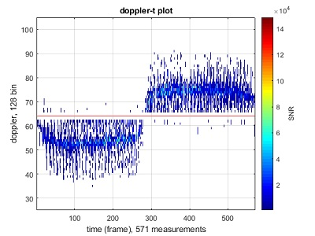
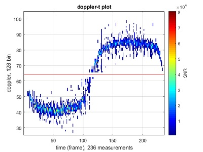

My thesis is about human walking detection. The basic work flow is, first extract the micro-doppler signature from the raw radar signal, then try to measure the properties. The radar module in use is Infineon automotive 24GHz radar development kit
Below is the extracted doppler-t plot for one person walking and running. For more detailed information please refer to the pdfs at the end.

walking

running
You can browse the matlab source here [radar_matlab], and the application source here [radar_app]